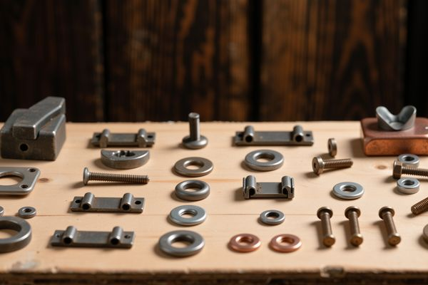
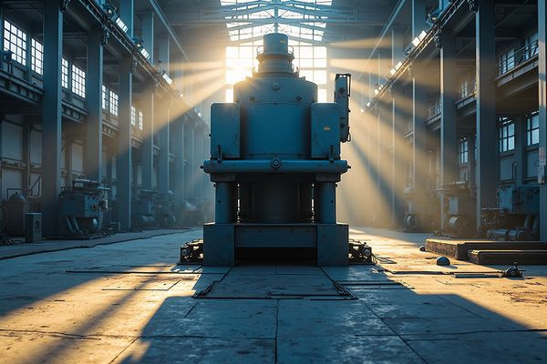
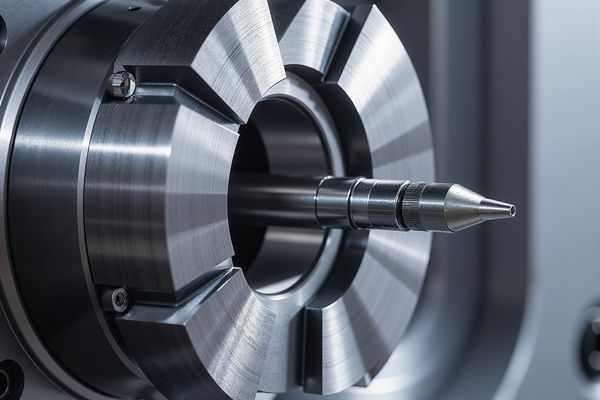
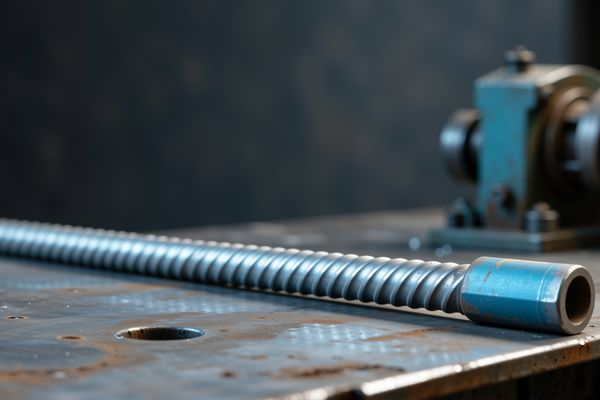
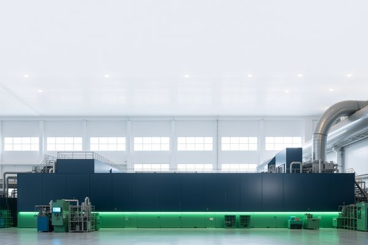
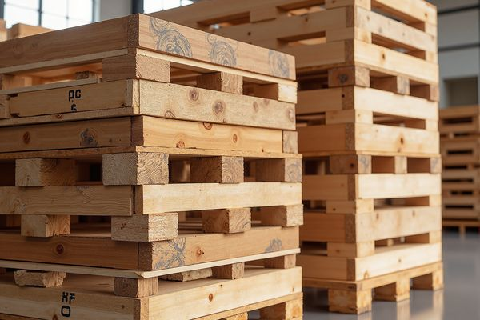

Capacidades de fabricación
Fabricación interna desde la materia prima hasta el producto final. Cada proceso controlado y cada lote trazable.

Forja en frío
Máquinas de estampación en frío de alta velocidad para producir fijaciones estándar de hasta M36.

Forja en caliente
Forja con prensa de fricción y martillo neumático para fijaciones M36–M64 y formas a medida.

Mecanizado CNC
Torneado y fresado CNC para fijaciones especiales de precisión, piezas no estándar y series pequeñas.

Laminado de roscas
Laminado en frío de roscas métricas, UNC, UNF, BSW y ACME con alto acabado superficial.

Tratamiento térmico
Temple y revenido para clases 8.8, 10.9 y 12.9 con trazabilidad completa.

Tratamiento superficial
Acabados: pavonado, galvanizado en caliente, zincado, láminas de zinc, fosfatado y PTFE.

Ensayos e inspección
Laboratorio propio para análisis químico, ensayos mecánicos, inspección dimensional y medición de recubrimientos.

Embalaje
Embalaje de exportación: cajas con palés, sacos tejidos o embalaje a medida.
¿Necesita fabricación a medida?
Comparta planos, cantidad y requisitos de entrega para una cotización.
Solicitar cotización